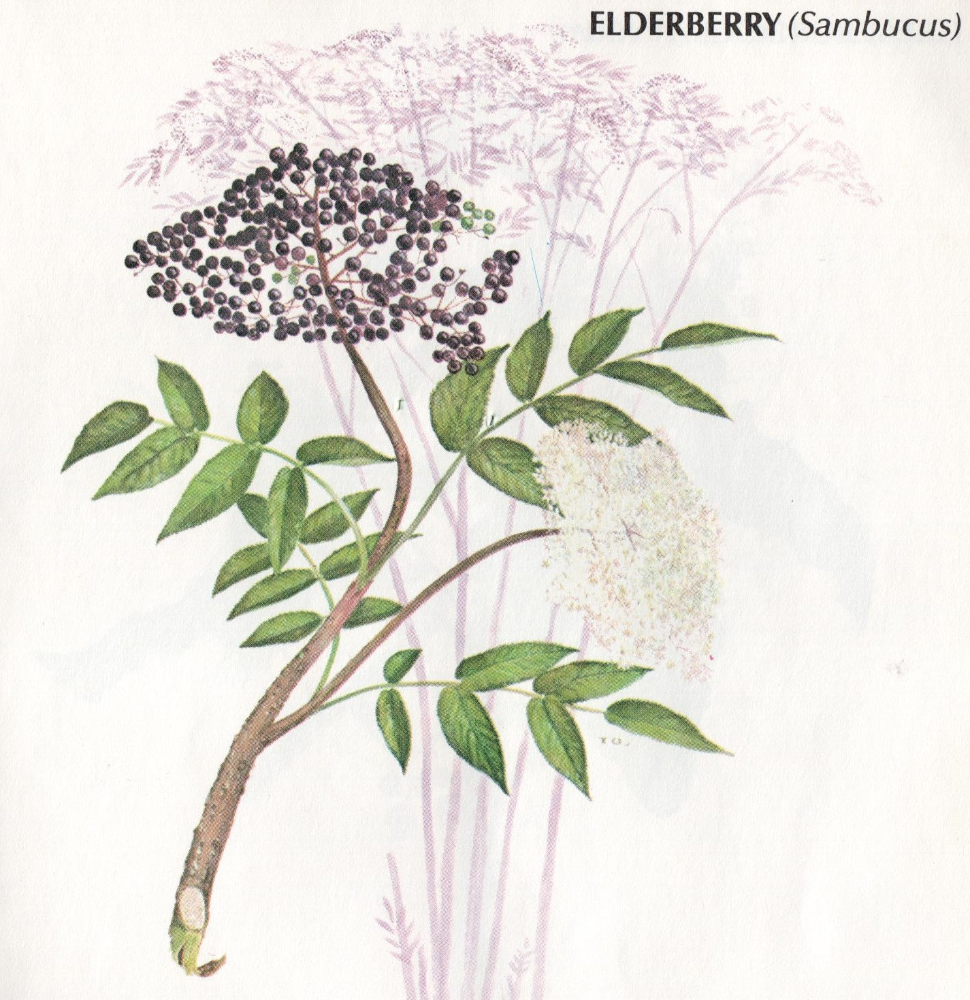

Herb Article Page
Go To Home Page
Description: White or Yellow flowers that deveolp into fruit; plant grows between 10-30 feet high. Blooms in April-June; fruits mid to late summer.
Proper Name: Sambucus nigra L. or Sambucus canadensis L.
Other Names: American Elder, Pipe Tree, Black Elder, Bore Tree, Common Elder
Meridians affected: lungs, liver, stomach, colon
Parts used: flowers, leaves, bark, berries
Bark properties:
Emetic
,
Cathartic
Flower properties: diaphoretic, diuretic, exanthematout, alterative, emollient, discutient, rubrifacient
When to Harvest:
-
Flowers: June
-
Leaves: July 8AM-10AM
-
Bark: September 11AM-1PM
-
Berries: After the 1st frost 2PM-4PM
Pick bunches of elderberries when they are ripe and black but still firm and shiny.
The easiest way to strip them from their stems is to use a fork.
To harvest the flowers for drying, pick whole, sweet-smelling heads and spread
them on brown paper; when dry, use a fork to stirp the blossoms off of the stems.
Photos::


Elderberry is a member of the honeysuckle family.
The roots are not to be used as they can be toxic!
The bark from young trees must be aged one year or more and makes a strong
laxative
when gathered in the autumn.
In small amounts it can help with renal and cardiac
dropsy
.
It can also be an
emetic
for
jaundice
conditions or
asthmatic
conditions with a lot of
mucus
and/or
phlegm
.
In the case of
dropsy
.
, one wine glassful of
aged elder bark infusion
every three hours until the bowels
move or until urine is excreted is suggested.
It is also used for epilepsy and to cleanse the stomach as an
emetic
.
Tea made from the
flowers
is excellent for eye inflamation or twitching.
It is a wonderful
tonic
and
blood purifier
.
It builds the system and is great for the kidneys and the liver.
It is also a great remedy for
erysepilas
.
Do not use fresh herb as poisoning may result! This is mostly for the Red Elderberry variety.
Elderberry has been used as a circulatory stimulant and an
anti-hypertensive
.
In fact, it is very good for the heart in general. It contains
capillarigenics
,
kaempferol
and many
anti-carcinogenic
components.
There have been a series of studies ocnducted on Elderberry Extract
with regards to the flu virus (Influenzas A & B).
In all cases, those subjects taking
sumbucol
experienced almost full recovery in 24-48 hours.
For hundreds of years, the gypsy people have used elderberries to treat the flu, colds, and neuralgia.
The hot tea is soothing to the respiratory system and promotes sweating.
It has been used to some success for skin inflammation (eczema, etc.).
Elderberries are a good souce of Vitamains A, B C, and B17 (laetrile), plus calcium, potassium, and iron.
The raw berry is said to be toxic so
only cooked berries should be used or those in tincture form.
Dried elderflowers have been used for making washes to treat blisters, hemorrhoids, arthritis, sores, and rheumatism.
The decocted inner bark was used topically by the Native Americans for dermatitis, skin ulcers, and eczema.
FYI: Elder is known as the "Tree of music" to some Native American tribes as they would make flutes from its stems.
Also called the "Tree of medicine".
- Flowers: June
- Leaves: July 8AM-10AM
- Bark: September 11AM-1PM
- Berries: After the 1st frost 2PM-4PM
Pick bunches of elderberries when they are ripe and black but still firm and shiny.
The easiest way to strip them from their stems is to use a fork.
To harvest the flowers for drying, pick whole, sweet-smelling heads and spread
them on brown paper; when dry, use a fork to stirp the blossoms off of the stems.

{kind=link}